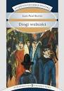

Drogi wolności

Powieść wydana w 1945r.
W Drogach wolności pisarz podejmuje zagadnienie wolności i jej drugiej strony (jej nieuchronnego cienia): złej wiary (mauvaise foi). Ta ostatnia jest jedną z najbardziej oryginalnych kategorii filozoficznych Sartre'a. Pewną wskazówką jest już tytuł cyklu: drogami wolności chodzą wszyscy jego bohaterowie. Jednak zupełnie inną kwestią jest, jaki użytek czynią oni ze swojej wolności. Nie przestając być wolnymi, bohaterowie Dróg wolności w ten czy inny sposób prezentują postawę, którą Sartre nazwał postawą złej wiary lub myślenia w złej wierze i tylko w nielicznych momentach doświadczają przebudzenia. Wówczas to stają się na krótko ludźmi żyjącymi w sposób autentyczny.